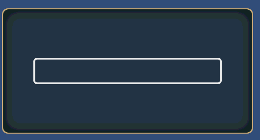

METER¶
C#: CWinCtrlMeter
This is the control to display a meter.
You can use this as a progress bar.
It is possible to display eight texture parts.
You can stretch any texture parts.
If the length is set to 1, it display same look as TEXTURE .
You can not receive a callback when this control is pressed as default. If you want to receive any callbacks, you need to set HIT flag to STYLE property.
METER(Control name) {
Property 1;
Property 2;
:
:
Property n
};
Example¶
WINDOW(255_000_00001) { STYLE = NOTITLEBAR|ANCHOR_CENTER; POSITION = 0,100; TEX_ID = 100_000_00001; CAPTION = 000_000_00010; SIZE = 512,256; }; METER(Progress) { ID = 000_001_00000; STYLE = ANCHOR_CENTER; SIZE = {100}-128; POSITION = 0,0; TEX_ID = 0,"MTR"; COLOR = 1,1,1,1; TEX_ID1 = 0,"MTRB"; COLOR1 = 1,1,1,1; };
Property¶
Default value¶
TEX_ID0 = "MTR"; TEX_ID1 = "MTRB"; COLOR = 1,1,1,1; CAPTION_COLOR = 1,1,1,1;
ID = Control ID¶
Define the control ID.
ID = 001_000_00010;Note
If you don’t set the ID, it generates automatically from the hash value.
POSITION = X, Y¶
Determine the display position. The base position changes according to the anchor in STYLE.
POSITION = 32,{50} + 64;Coordinates can be specified as a percentage .
SIZE = width,height¶
It changes the display size. If it is omitted , or , you specify 0 ,it gets the size from the texture parts.
SIZE = 64,32; //64x32 SIZE = ,32; //Set the width of the texture part width SIZE = 64; //Set the height of the texture part height SIZE = {50} - 25;Size can be specified as a percentage .
TEX_ID = Texture ID,Part ID¶
TEX_ID = Part ID¶
You set the texture ID and the part ID.
TEX_ID n = Texture ID,Part ID¶
TEX_ID n = Part ID¶
You set the texture ID and the part ID.
It can be set in the range of n = [1..7].
If n = 0, it operates the same texture as the TEX_ID.
TEXTURE_OFFSET n = offset X,offset Y¶
Set the display offset of the badge.
It can be set in the range of n = [1..7].
Texture offset can be specified by a percentage .
Texture offset can be specified by a percentage .¶
You set the texture ID and the part ID.
It can be set in the range of n = [1..7].
When n = 0, it has the same meaning as SIZE.
TEXTURE_SIZE1 = 64,32; //64x32 TEXTURE_SIZE2 = ,32; //Set the width of the texture part width TEXTURE_SIZE3 = 64; //Set the height of the texture part heightTexture size can be specified by a percentage .
COLOR = R,G,B,A¶
Set the color.
Set R, G, B in the range of 0…2 .
If you set a value in excess of one , each color component can double the brightness.
Set A in the range of 0…1 .
COLOR n = R,G,B,A¶
Set the color.
Set R, G, B in the range of 0…2 .
If you set a value in excess of one , each color component can double the brightness.
Set A in the range of 0…1 .
It can be set in the range of n = [1..7].
If n = 0, it operates the same texture as COLOR .
STYLE = Flag0|Flag1|..|Flagn¶
You can set the display anchor of control.
Display position anchor flag |
Description |
|---|---|
ANCHOR_DEFAULT |
Set the anchor position in the upper left Same as ANCHOR_LEFTTOP The default control center position is set to BASE_LEFT. |
ANCHOR_LEFTTOP |
Set the anchor position in the upper left The default control center position is set to BASE_LEFT. |
ANCHOR_LEFT |
Set the anchor position to the left. And vertical centering The default control center position is set to BASE_LEFT. |
ANCHOR_LEFTBOTTOM |
Set the anchor position to the left. Located along the lower edge The default control center position is set to BASE_LEFTBOTTOM. |
ANCHOR_TOP |
Set the anchor position to the upper side Centering at lateral. The default control center position is set to BASE_TOP. |
ANCHOR_CENTER |
Set the anchor position in the center of the window The default control center position is set to BASE_CENTER. |
ANCHOR_BOTTOM |
Set the anchor position at the bottom Centering at lateral. The default control center position is set to BASE_BOTTOM. |
ANCHOR_RIGHTTOP |
Set the anchor position in the upper right The default control center position is set to BASE_RIGHTBOTTOM. |
ANCHOR_RIGHT |
Set the anchor position to the right And vertical centering The default control center position is set to BASE_RIGHT. |
ANCHOR_RIGHTBOTTOM |
Set the anchor position to the right Located along the lower edge The default control center position is set to BASE_RIGHTBOTTOM. |
You can set the center position of the control.
Base position change flag |
Description |
|---|---|
BASE_DEFAULT |
It varies depending on the anchor flag . If you do not specifically set , this value is set . See the description of each anchor flag |
BASE_LEFTTOP |
Set the center position to the upper left side. |
BASE_LEFT |
Set the center position to the left side. and vertical centering. |
BASE_LEFTBOTTOM |
Set the center position to the bottom left side. |
BASE_TOP |
Set the center position to the upper side. and horizontal centering |
BASE_CENTER |
Set the center position to the center. |
BASE_BOTTOM |
Set the center position to the bottom side. And horizontal centering. |
BASE_RIGHTTOP |
Set the center position to the upper right side. |
BASE_RIGHT |
Set the center position to the right side. and horizontal centering |
BASE_RIGHTBOTTOM |
Set the center position to the bottom right side. |
Style that limits the function as follows .
Function limit style |
Description |
|---|---|
HIDE |
Hide. |
DRAG |
Enable a dragging. |
DISABLE |
It is not able to pressing the control. And the control color darken. |
HIT |
It is able to pressing the control. |